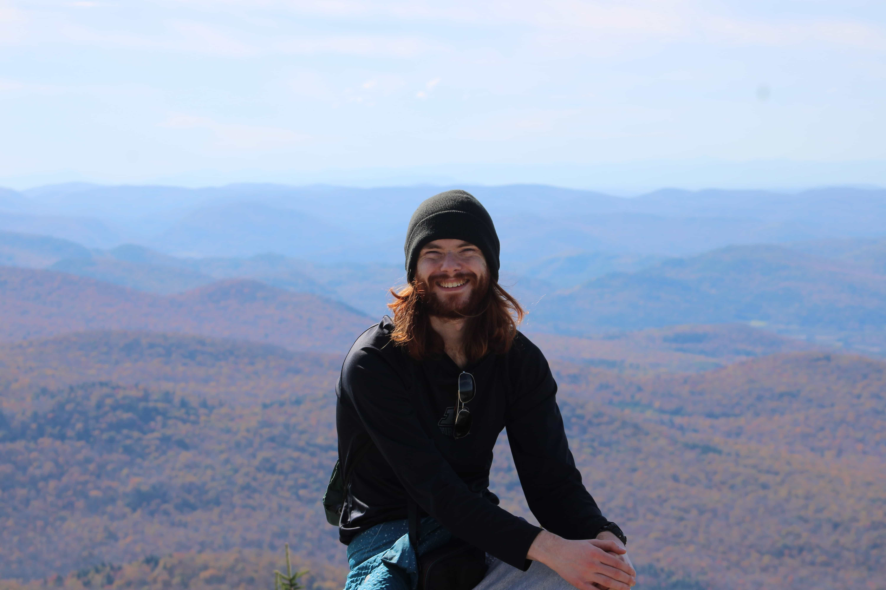
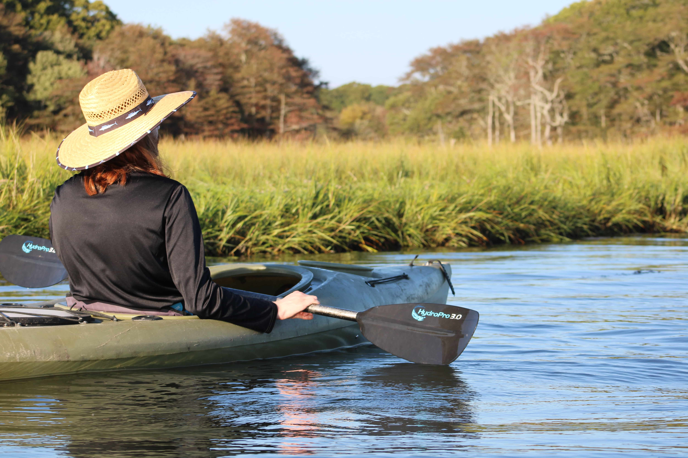

Welcome!
At the time of writing, it would appear that I am the third most popular "Andrew Moodie" on the internet. I'm not yet sure if I enjoy the relative obscrucity, or if I would like to become more famous.
I graduated from Purdue University in 2024 with a Bachelor's degree in Mechanical Engineering, and am currently attending the University of Washington for my Master's in Mechanical Engineering.
Follow me on Instagram, LinkedIn, Youtube (TBD), or click here for my resume. The links on the left highlight some of my various interests.

